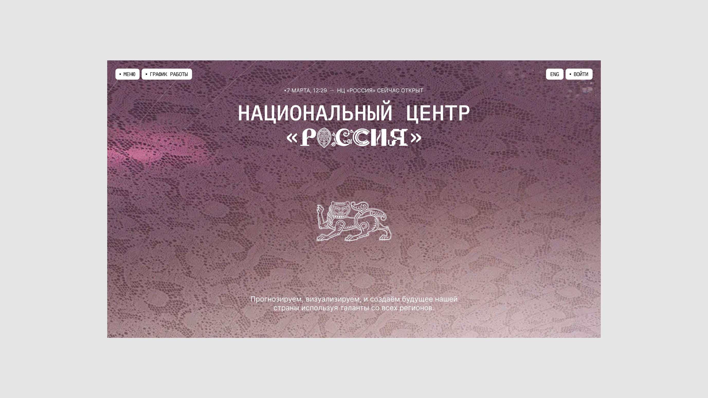
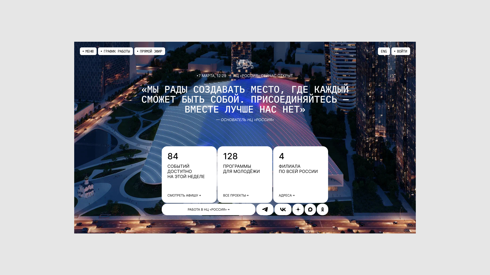
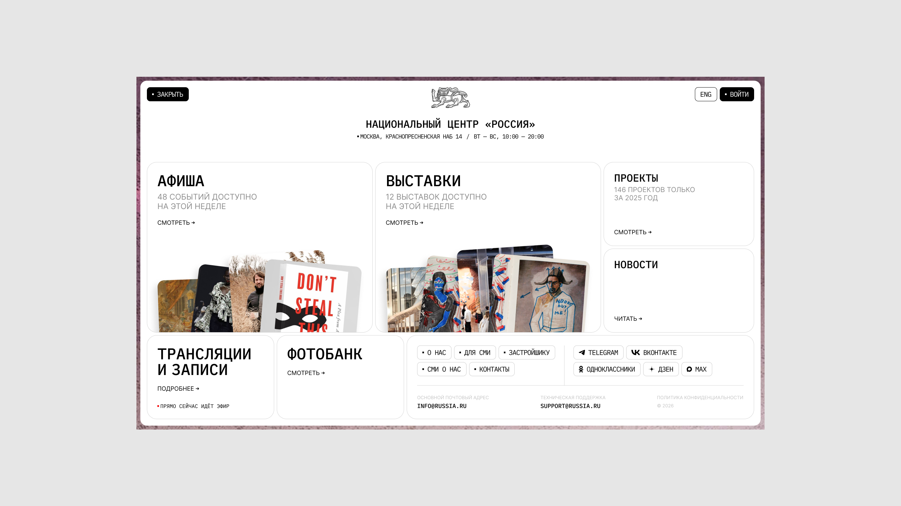
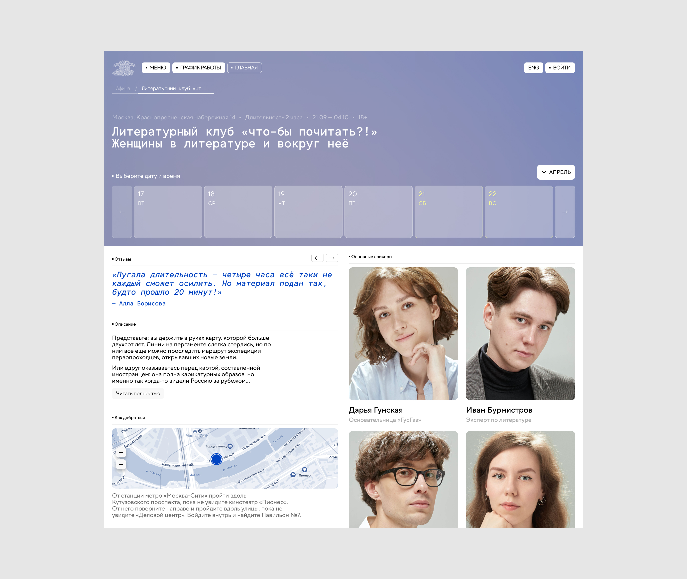

Редизайн сайта национального центра «Россия»
Концепт обновлённого сайта russia.ru, который был предложен в рамках тендера. Тендер был выигран и сейчас работа над сайтом продолжается
Главная — рассказывает о центре и нативно даёт ссылки на интересующие страницы. В конце не оставляем наедине с подвалом, а подталкиваем к более детальному знакомству с центром
На странице мероприятия упор сделан на портреты спикеров и реальные отзывы. Также, на ней заложена гибкость по блокам: краткий обзор от ИИ, видео с прошлых встреч, важные уведомления. Набор блоков можно менять для каждого мероприятия
ИИ реализация видео предполагается только в рамках концепта, в итоге на сайте будет настоящий рендер
A concept for the updated russia.ru website, proposed as part of a tender. The tender was won, and work on the site is still ongoing
The homepage tells the story of the center and naturally links to the pages you're interested in. At the end, instead of leaving you alone with the footer, it nudges you toward getting to know the center in more detail
The event page focuses on speaker portraits and real testimonials. It also has flexible blocks: an AI-generated overview, videos from past events, and important notices. The set of blocks can be changed for each event
The AI-generated video is only used within the concept — the final site will have a real render



